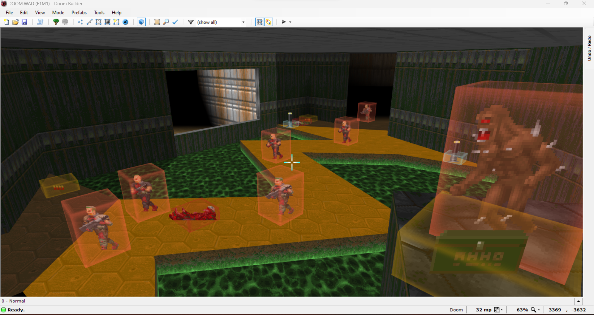

Terrain greatly influences any battle. Being forced to have the low ground makes any engagement more difficult. Likewise, having
the high ground can make a battle easier. It's all about being able to digest and comprehend the enemies ahead of you and where to go
to decrease your chances of dying.



One of the greatest parts of wad creation is the creativity you have. Take a look at this wad titled "Lullaby"(the image above).
It looks amazing, using a variety of custom textures to give it a unique look and feel. The wad also includes many interesting and challenging
fights and engagements with the demon onslaughts. It is designed as a non-linear map, where the goal is to get all of the available keys
in any order you please. Each key is awarded after completing unique challenges, consisting of slaying demons. The keys are then used to
get to the final arena, arguably the hardest part of the wad. You fight teleporting demons, making it hard to navigate the crowded arena.
At the end, it summons a Cyberdemon and a few Archviles, forcing you into fast and selective removal. The Cyberdemon is placed on the
opposite side of the arena, and tries to pester you with high damage rockets while Archviles try to burn you from afar. This wad was
one of the reasons I got into wad creation in the first place, because of its interesting design and very well done asthetic.